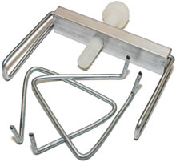

| coolers |
| home page |
| . cooling fan hard drive coolers,chipset coolers,heat sink cpu cooler see cart checkout Account Contact us. Whether it be your hard drive, your CPU, your motherboard chipset, or your other system componants excessive heat is always bad for them. Keeping your system cool is the best way to ensure your computers longevity and eliminate system crashes. Two high speed 4cm fans and large heat-sink will keep high RPM SCSI and IDE drives cool. |
|  |
|
| PC COOLING AND SERVER COOLING SOLUTIONS - 2COOLPC South Bay Engineering would like to extend our deepest and most heartfelt condolences to all who have suffered the loss of loved ones resulting from the terrible act of coward ness on September 11, 2001. We praise the heroic acts of law enforcement officers, fire fighters and all others who have made the ultimate sacrifice in efforts to save the lives of their fellow beings in their despair. This overheating causes slow downs, system error messages, and crashing. .. |